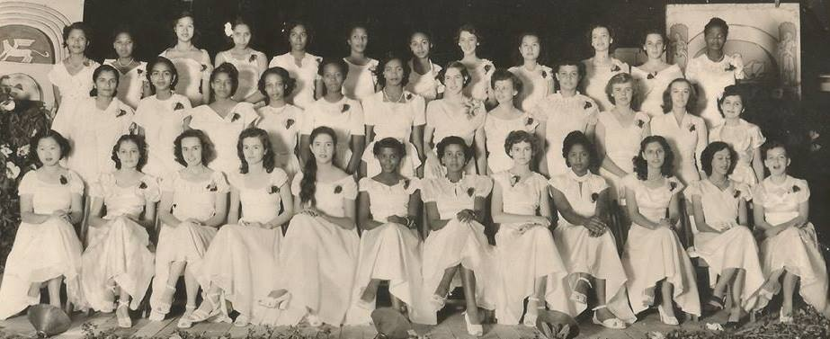

WELCOME TO WOLMER'S
A Tradition of Learning and Excellence
Welcome to the Wolmer's Trust High School for Girls community. Explore our school's history, achievements and the individuals who contribute to our tradition of academics and excellence.
Learn More About Us
OUR SCHOOL
Our Thriving Legacy
Established as a separate girls' school in 1896, Wolmer's Trust High School for Girls is part of a deep-rooted educational tradition in Jamaica.
Guided by the motto Age Quod Agis, we embrace the pursuit of knowledge, personal growth and excellence.
Explore Our HistoryOUR HERITAGE
Rooted in History
1729
The Wolmer's Trust was established through the legacy of John Wolmer.
1896
Wolmer's Girls became a separate school with its own leadership.
1984
Glasspole House was completed as a shared sixth-form facility for the boys' and girls' high schools.
WOLMER'S PRIDE
Inspiring Excellence
Shelly-Ann Fraser-Pryce
Shelly-Ann is a proud alumna of Wolmer's Trust High School for Girls. Fraser-Pryce is celebrated for her exceptional achievements in athletics and her contributions to Jamaica.
In 2025, she donated US$50,000 to the school in support of education for the future generations of students.
SCHOOL COMMUNITY
The Student Portal
Access the school portal to connect with academic resources and school information.
Access Portal